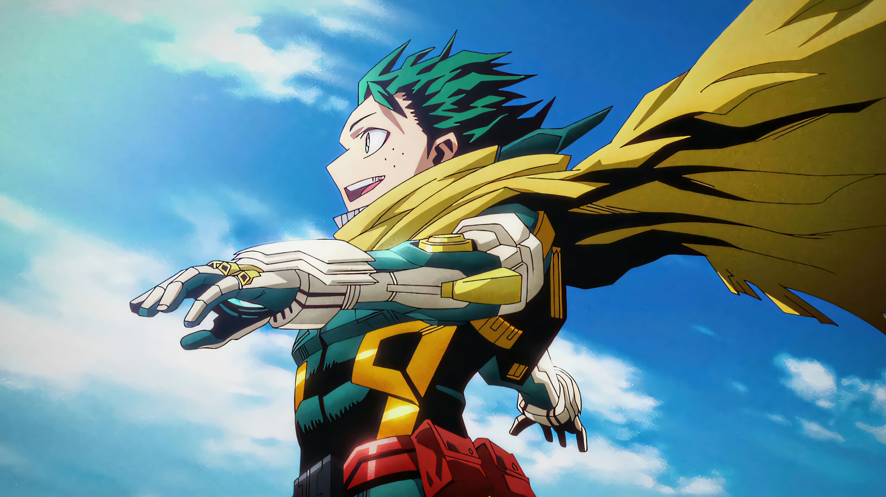
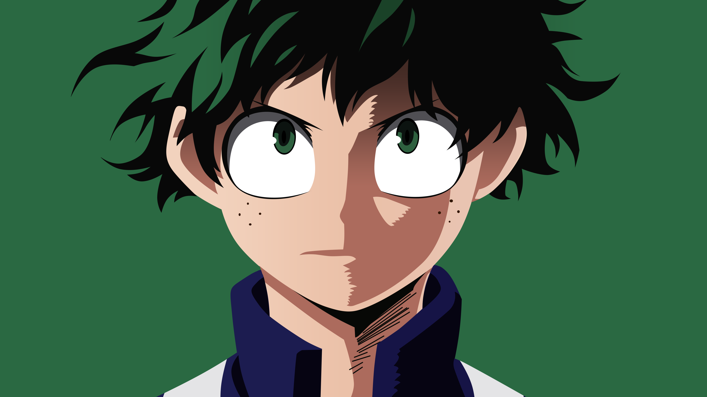
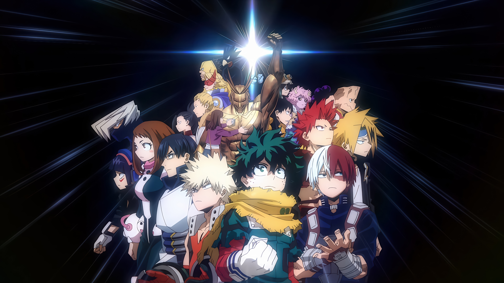

<title>Izuku Midoriya | My Hero Academia</title>

<link
    href="https://cdn.jsdelivr.net/npm/bootstrap@5.3.3/dist/css/bootstrap.min.css"
    rel="stylesheet"
>

<link rel="stylesheet" href="style.css">
<header>
    <nav class="navbar navbar-expand-lg navbar-dark fixed-top">

        <div class="container">

            <a class="navbar-brand fw-bold" href="#home">
                My Hero Academia
            </a>

            <button
                class="navbar-toggler"
                type="button"
                data-bs-toggle="collapse"
                data-bs-target="#mainNav"
                aria-controls="mainNav"
                aria-expanded="false"
                aria-label="Toggle navigation"
            >
                <span class="navbar-toggler-icon"></span>
            </button>

            <div class="collapse navbar-collapse" id="mainNav">

                <ul class="navbar-nav ms-auto">

                    <li class="nav-item">
                        <a class="nav-link" href="#home">
                            Home
                        </a>
                    </li>

                    <li class="nav-item">
                        <a class="nav-link" href="#Midoriya">
                            Midoriya
                        </a>
                    </li>

                    <li class="nav-item">
                        <a class="nav-link" href="#journey">
                            Journey
                        </a>
                    </li>

                    <li class="nav-item">
                        <a class="nav-link" href="#about">
                            About
                        </a>
                    </li>

                </ul>

                <a href="#Midoriya" class="btn btn-light ms-lg-3">
                    Explore
                </a>

            </div>

        </div>

    </nav>
</header>


<main>

    <!-- HERO -->

    <section id="home" class="hero-section">

        <div class="container">

            <div class="row align-items-center min-vh-100">

                <div class="col-lg-7 hero-text">

                    <span class="badge rounded-pill mb-3">
                        MY HERO ACADEMIA
                    </span>

                    <h1>
                        Izuku
                        <br>
                        Midoriya
                    </h1>

                    <p class="lead">
                        Meet Izuku Midoriya, a determined young hero who
                        begins his journey without a Quirk and dreams of
                        becoming a great hero like his idol, All Might.
                    </p>

                    <div class="hero-buttons">

                        <a
                            href="#Midoriya"
                            class="btn btn-primary btn-lg"
                        >
                            Meet Midoriya
                        </a>

                        <a
                            href="#journey"
                            class="btn btn-outline-light btn-lg"
                        >
                            His Journey
                        </a>

                    </div>

                </div>

            </div>

        </div>

    </section>


    <!-- INTRODUCTION -->

    <section id="Midoriya" class="py-5 intro-section">

        <div class="container py-5">

            <div class="row align-items-center g-5">

                <div class="col-lg-6">

                    <div class="image-card">

                        

                    </div>

                </div>


                <div class="col-lg-6">

                    <span class="section-label">
                        INTRODUCTION
                    </span>

                    <h2>
                        The journey of
                        <span>a hero.</span>
                    </h2>

                    <p>
                        <b>Izuku Midoriya</b>, also known as <b style="color: green;">Deku</b>, is the main
                        protagonist of My Hero Academia. He is a kind,
                        determined, and hardworking student who dreams of
                        becoming a professional hero.
                    </p>

                    <p>
                        Despite being born without a Quirk, Midoriya never
                        gives up on his dream. His courage and willingness
                        to help others eventually lead him toward a new
                        beginning at U.A. High School.
                    </p>

                    <a
                        href="#journey"
                        class="btn btn-primary"
                    >
                        Discover His Story →
                    </a>

                </div>

            </div>

        </div>

    </section>


    <!-- CHARACTER -->

    <section id="journey" class="Midoriya-section py-5">

        <div class="container py-5">

            <div class="text-center mb-5">

                <span class="section-label">
                    ABOUT MIDORIYA
                </span>

                <h2>
                    More than
                    <span>a hero.</span>
                </h2>

                <p class="section-description">
                    Learn about the qualities, challenges, and dreams
                    that define Izuku Midoriya.
                </p>

            </div>


            <div class="row g-4">

                <!-- CARD 1 -->

                <div class="col-md-6 col-lg-4">

                    <article class="film-card h-100">

                        

                        <div class="card-body">

                            <span class="film-number">
                                01
                            </span>

                            <h3>
                                Determination
                            </h3>

                            <p>
                                Midoriya continues to move forward even
                                when he faces difficult challenges. His
                                determination helps him grow stronger
                                throughout his journey.
                            </p>

                        </div>

                    </article>

                </div>


                <!-- CARD 2 -->

                <div class="col-md-6 col-lg-4">

                    <article class="film-card h-100">

                        

                        <div class="card-body">

                            <span class="film-number">
                                02
                            </span>

                            <h3>
                                One For All
                            </h3>

                            <p>
                                Midoriya receives the powerful Quirk
                                One For All from All Might, beginning
                                an important new chapter in his life.
                            </p>

                        </div>

                    </article>

                </div>


                <!-- CARD 3 -->

                <div class="col-md-6 col-lg-4">

                    <article class="film-card h-100">

                        

                        <div class="card-body">

                            <span class="film-number">
                                03
                            </span>

                            <h3>
                                A True Hero
                            </h3>

                            <p>
                                For Midoriya, being a hero is not only
                                about having power. It is about protecting
                                people and reaching out to those who need
                                help.
                            </p>

                        </div>

                    </article>

                </div>

            </div>

        </div>

    </section>


    <!-- QUOTE -->

    <section class="cta-section py-5">

        <div class="container py-5">

            <div class="row justify-content-center">

                <div class="col-lg-8 text-center">

                    <div class="quote-box">

                        <div class="quote-icon">
                            ✦
                        </div>

                        <h2>
                            "You can become a
                            <span>hero.</span>"
                        </h2>

                        <p>
                            Midoriya's story is a journey of courage,
                            determination, friendship, and the desire
                            to save others.
                        </p>

                        <a
                            href="#home"
                            class="btn btn-primary"
                        >
                            Back to Top ↑
                        </a>

                    </div>

                </div>

            </div>

        </div>

    </section>

</main>


<!-- FOOTER -->

<footer id="about">

    <div class="container">

        <div class="row g-4">

            <div class="col-md-6">

                <h3>
                    Izuku Midoriya
                </h3>

                <p>
                    A fan-made educational webpage introducing the
                    character and journey of Izuku Midoriya from
                    My Hero Academia.
                </p>

            </div>


            <div class="col-md-3">

                <h5>
                    Explore
                </h5>

                <ul class="footer-links">

                    <li>
                        <a href="#home">
                            Home
                        </a>
                    </li>

                    <li>
                        <a href="#Midoriya">
                            Midoriya
                        </a>
                    </li>

                    <li>
                        <a href="#journey">
                            Journey
                        </a>
                    </li>

                </ul>

            </div>

        </div>

        <hr>

        <div class="text-center copyright">

            <p>
                © 2026 Izuku Midoriya Fan Page.
                Created for educational purposes.
            </p>

        </div>

    </div>

</footer>


<script
    src="https://cdn.jsdelivr.net/npm/bootstrap@5.3.3/dist/js/bootstrap.bundle.min.js">
</script>
